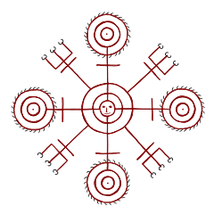
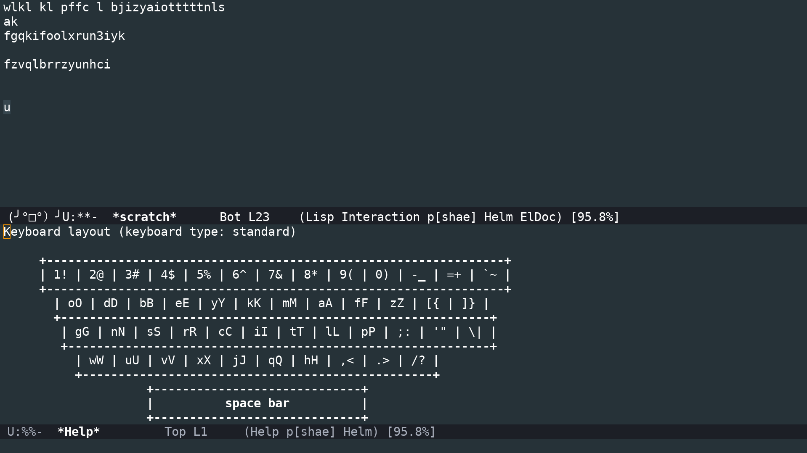

markov keyboard
Jump directly to the finished thing?
Markov chains
Markov chains keep track of how often one things follows another. You probably use them every day on your phone. When you’re sending a text message, you probably see a list of “most likely next words” and that’s from a markov chain!

Markov chain keyboard layout?!
But wait, how could this possibly apply to a keyboard layout!
Most people in the USA use the qwerty keyboard, but keyboard layouts for other languages can be pretty different. I write Swedish as well as English but I don’t have letters like å or ä on my keyboard.
So there are lots of other keyboard layouts, including non-qwerty layouts designed for efficiently writing English. You might know that the letter ‘e’ is the most common letter in English, so why isn’t that on the home row? I use a keyboard layout called Dvorak that moves the most common letters to the home row.
Lots of layouts have been proposed that claim to reduce arm strain by reducing finger travel or increasing hand alternation or all sorts of other things.
But all those layouts are static, there’s one single pattern. Instead, we could use a Markov chain to produce MANY layouts, and have them change every time you press a key! Is this useful? Probably not, but it sure is a fun thing to build!
Originally I wanted the layout to update its count of “this letter follows that letter this many times” every time you pressed a key, but that was too hard to implement. So I switched to a simpler idea. When the python script is given a text file, twenty six different keyboard layouts are calculated that follow the frequency of letters in the text file(s).
My friend Darius Bacon helped me with this project, he wrote the initial Python code to calculate the markov chain from any given piece of text. He also helped me pick up emacs lisp again after ten years of not using it.
When enabled, each keypress inserts itself, remaps the keyboard, and displays the layout that’s specific to that letter.

Future work
I’d like to port this to X11, so it’s not emacs specific.
I’ve had several users ask that the keyboard display highlight the home row because the layout is so unfamiliar they want to know where their fingers are placed.
As much as this was a silly fun hack, I’m starting to think up actual use cases! I strongly suspect I can prove that 26 layouts will reduce finger travel more than is possible with any one static layout.
Lots of fascinating suggestions have come out of this, I’m probably easiest to find on twitter if you have ideas or thoughts.